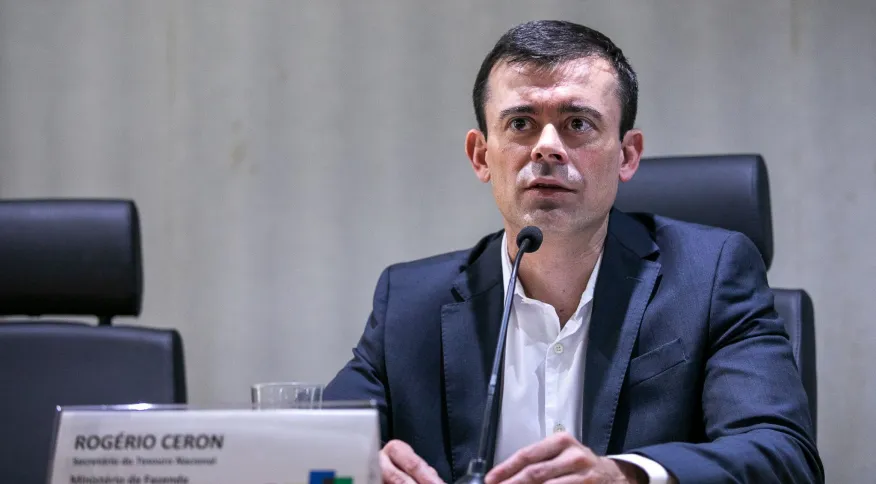
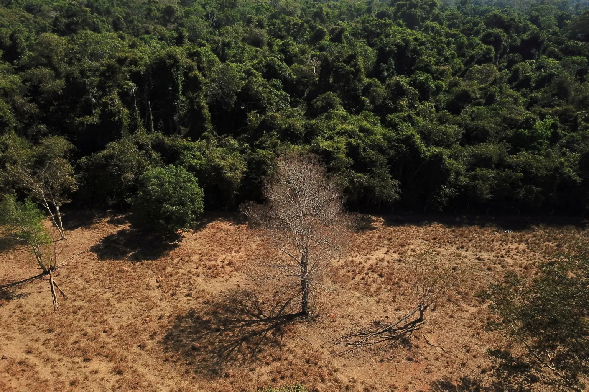
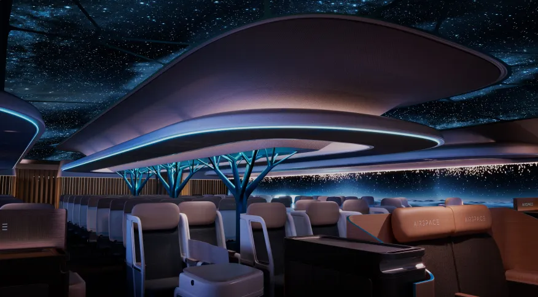
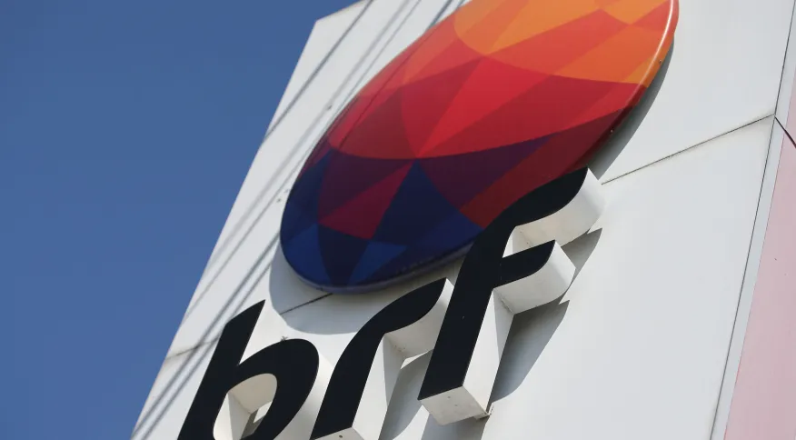
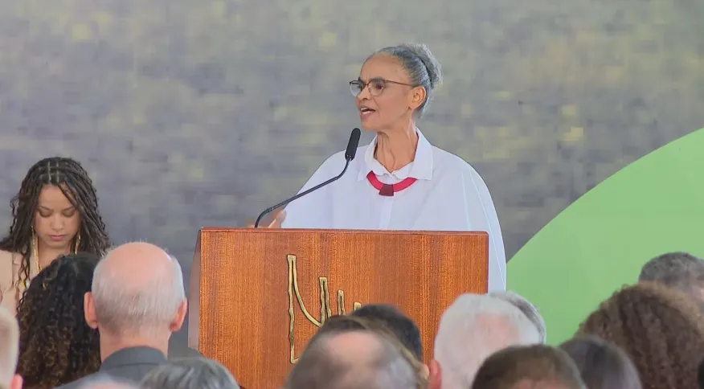
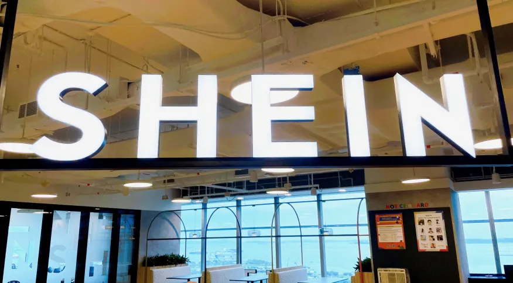
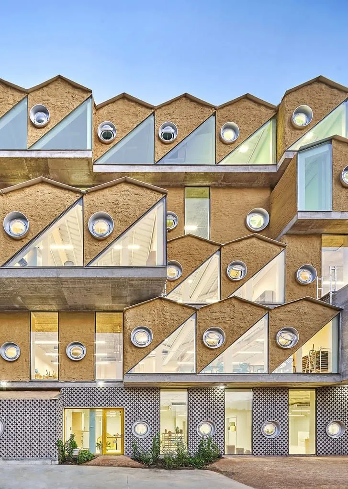
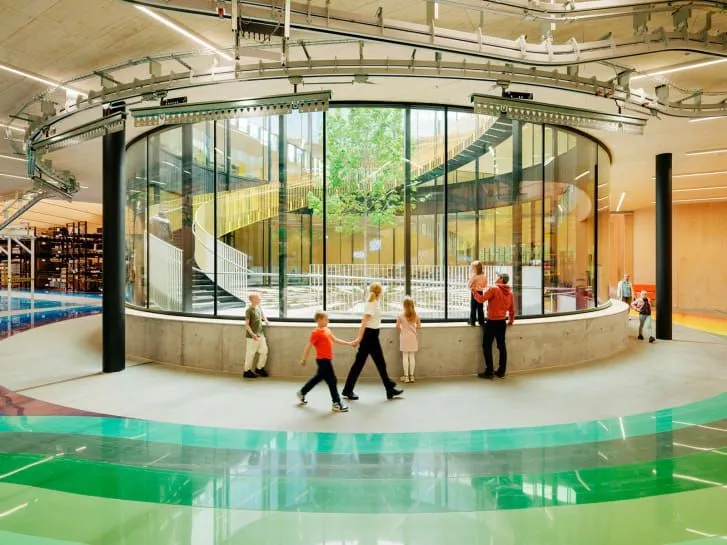
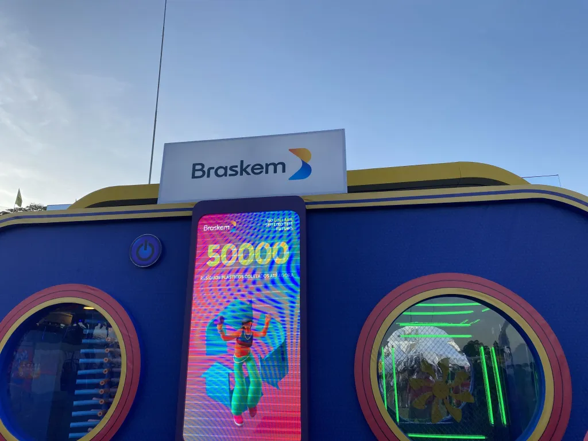

Em 30 anos, mundo vai ser de 40% a 60% mais elétrico, diz
chairman da Schneider Electric
Para o líder, as tecnologias digitais combinadas com a
eletrificação têm um enorme potencial como fonte de energia
segura, confiável e sustentável que pode ajudar a atender às
crescentes demandas globais de energia de maneira
sustentável, esforço que também se reflete no mercado
brasileiroMatéria Original: CNN
Em visita ao país, o presidente do conselho administrativo
de um dos maiores grupos do setor de energia do mundo, a
Schneider Electric, Jean-Pascal Tricoire, afirmou em
entrevista à CNN na última
sexta-feira (16) que o potencial da energia limpa coloca o
Brasil em um lugar único no mundo.
“O Brasil tem um ativo que é sua eletricidade verde, porque
vem de fontes renováveis. A eletricidade hoje é apenas 20%
do consumo de energia do Brasil. Olhando para a perspectiva
global, o mundo está alinhado com o Brasil nos 20%. Em 30
anos, o mundo vai ser de 40% a 60% elétrico. Espere que o
seu ambiente seja de duas a três vezes mais elétrico.”
Tricoire veio ao Brasil para participar de um evento oficial
da companhia, em São Paulo, e também para o Innovation
Summit 2023, que acontece em Belo Horizonte nos dias 19 e 20
de junho. Questionado sobre o caminho para um crescimento
aliado à sustentabilidade, o chairman da empresa afirmou que
é preciso empenho.
“Você será melhor pago se tiver um desempenho econômico, mas
também se tiver um desempenho sustentável. Tem muito a ver
com cultura, com educar e dialogar. Afinal, economia e
ecologia também andam juntas”, disse.
Para o líder, as tecnologias digitais combinadas com a
eletrificação têm um enorme potencial como fonte de energia
segura, confiável e sustentável que pode ajudar a atender às
crescentes demandas globais de energia de maneira
sustentável, esforço que também se reflete no mercado
brasileiro.
“Você pode fazer com que qualquer edifício seja 30% mais
eficiente, tornando-o mais digital. Você pode ter muita
economia, além de ser melhor para o planeta. Poucos
edifícios são digitais hoje. É tudo uma questão de
implementação, 70% das emissões de carbono poderiam ser
eliminadas com a tecnologia existente”, reforça.

Título público “verde” vai atrair investimentos e puxar
transição ecológica no Brasil, diz secretário do Tesouro à
CNN
Governo indica que após “arrumar a casa”, com marco fiscal
e reforma tributária, transição ecológica será agenda
prioritária da equipe econômicaMatéria Original: CNN
O secretário do Tesouro Nacional,
Rogério Ceron, afirmou em entrevista à CNN que a emissão de
títulos públicos
“verdes” pelo governo federal — prevista para o segundo
semestre deste ano — puxará uma agenda de transição
ecológica e atrairá investimentos ao Brasil.
“Hoje há um grande interesse nessas pautas [voltadas ao
ESG], o mundo todo quer o incentivo à transição ecológica. Com
isso, os investidores aceitam uma taxa de juros um pouco
menor para esses títulos — caso você acolha compromissos com
essa agenda”, explica sobre a vantagem destes papéis.
O secretário destaca, contudo, que a diferença de
taxa de juros
não é o principal objetivo da medida, mas sim seu
simbolismo. Segundo Ceron, a emissão “marcará a presença
brasileira na agenda de transição ecológica”.
A medida puxa uma das prioridades do governo federal para a
continuidade do mandato, a transição ecológica. O ministro
da Fazenda, Fernando Haddad, vem apontando em entrevistas
que após “arrumar a casa”, com o marco fiscal e a reforma
tributária, a
gestão voltará seu foco a este tópico.
“Depois de passar essa agenda de arrumar o orçamento, nós
vamos entrar no segundo semestre em uma agenda de médio e
longo prazo, voltada à questão da transição ecológica. Vamos
começar a soltar as medidas que vão anunciar para o mundo o
que o Brasil pretende de si mesmo”, disse o ministro em
entrevista à CNN.
Ainda no âmbito do Tesouro, Ceron indica que o governo
planeja induzir, a partir do segundo semestre, estados e
municípios a incluírem em suas operações de crédito com
garantia da União pautas voltadas à
transição energética
e ecológica.
Títulos verdes vão atrair investimentos
Os títulos sustentáveis são papéis emitidos que abrangem a
pauta ESG (com pautas relacionadas ao meio ambiente, ao
social e à governança). A diferença entre uma emissão comum
e uma emissão “green” é o compromisso do emissor com a
agenda de sustentabilidade.
“Na emissão tradicional não há qualquer compromisso para a
aplicação daquele recurso. Pagamos a taxa de juros para os
investidores e acabou. Na sustentável, eu vou além, eu tenho
compromissos sustentáveis”, explica Ceron.
Até por essa razão, o trabalho do Comitê não se encerra com
a emissão dos títulos, diz o secretário. Haverá um processo
de acompanhamento e prestação de contas aos investidores
sobre o avanço das pautas assumidas como compromisso.
Entre as despesas e investimentos elegíveis para estarem
atrelados a estes papéis estão aquelas voltadas ao combate
do desmatamento, ao apoio a energias renováveis, a ações de
ciência e tecnologia na área de
descarbonização, ao fomento a reservação e irrigação sustentável na
agriculta, entre outras.

Os alertas de desmatamento na Floresta Amazônica, ao longo
dos cinco primeiros meses de 2023, caíram 31% se
comparados ao mesmo período de 2022 / 28/07/2021
REUTERS/Amanda Perobelli
Ceron cita experiências internacionais e indica que a
emissão de títulos “verdes” pelo governo tendem a abrir este
mercado nas regiões em que ocorre. Ou seja, após o movimento
da gestão federal,
agentes privado
passariam a utilizar esse mecanismo.
“Feita a emissão pelo governo, a tendência é abrir o mercado
para empresas brasileiras acessarem funding barato no
exterior para seus projetos de transição ecológica. Isso
gera mais investimento no Brasil, é muito importante”,
explica.
“Temos a necessidade de montar um arcabouço, que é um
conjunto de compromissos que são anexados aos títulos
sustentáveis que serão emitidos. É um compromisso do
emissor, no caso do
governo federal, com uma agenda de sustentabilidade”, explica.
Segundo Ceron, o Comitê de Finanças Sustentáveis Soberanas
já trabalha com “minuta” para o mecanismo. O documento foi
compartilhado com diversos
ministros, e está marcada para a próxima quinta-feira (22) uma
reunião, em que os titulares das pastas vão dar devolutivas
sobre a proposta.
“Na reunião, vamos colher subsídios, em cima dessa minuta,
com os ministérios, que vão dar sugestões de ações e
programas que há em suas pastas e podem ser encaixadas nesse
arcabouço”, indica.
O objetivo do comitê é encerrar entre junho e julho a
elaboração deste arcabouço e então iniciar um “processo” de
validação do documento com entidades técnicas, investidores
e outros agentes do mercado.
“Provavelmente a partir de setembro estaremos prontos para
fazer essa emissão. Aí é uma janela que — não podemos cravar
uma data — vamos sentindo no mercado. O objetivo é
materializar a emissão no segundo semestre e estamos
caminhando bem para isso”, diz o secretário.
Segundo ele, investimentos devem incluir refinarias de
Cubatão, Paulínia e Duque de Caxias; Repar, no Paraná, já
tem produção do diesel RMatéria Original: CNN
A
Petrobras
vai investir R$ 3 bilhões para adaptar refinarias e produzir
o chamado diesel R, com conteúdo renovável, disse o diretor
de Transição Energética e Sustentabilidade da companhia,
Maurício Tolmasquim, durante evento no Rio de Janeiro.
Segundo ele, os investimentos devem incluir as refinarias de
Cubatão, Paulínia e Duque de Caxias. A Repar, no Paraná, já
tem produção do diesel R.
Ele disse que a expansão do diesel renovável pela Petrobras
deve ajudar a agricultura familiar ao gerar demanda por óleo
vegetal, matéria-prima do produto.

Airbus anuncia projeto de avião sustentável com teto
transparente e janelas maiores; veja imagens
Empresa irá investir em processos e ferramentas digitais,
como tecnologia de impressão 3D, estruturas biônicas e uma
filosofia de design circularMatéria Original: CNN
A
Airbus, uma das principais empresas de aeronaves do mundo,
anunciou que está projetando
aviões
mais sustentáveis. Uma das características dos novos aviões,
segundo o site oficial da empresa, são janelas maiores e um
teto transparente.
Para reduzir a pegada de carbono, a empresa afirma que irá
investir em processos e ferramentas digitais, como
tecnologia de impressão 3D, estruturas biônicas e uma
filosofia de design circular.
As inovações permitirão um avião mais leve. Isso será
possível com o uso de tecidos de base biológica e polímeros
reciclados. Em um vídeo, a Airbus mostra como seria a cabine
dos novos aviões.
O projeto está dividido entre etapas. Até 2025, o objetivo é
fornecer transparência sobre o impacto ambiental das peças e
operações, além de oferecer opções com emissão reduzida de
gás carbônico.
Até 2030, a Airbus quer introduzir novas soluções e
materiais no interior da cabine, também com baixo impacto de
gás carbônico. Outra meta é reduzir o desperdício de
produtos da cabine durante a produção e o descarte em
aterros no final do uso.
A última etapa, a partir de 2035, é integrar a geração de
cabines em aeronaves movidas a hidrogênio. Os materiais da
cabine passam a ser totalmente reciclados, reutilizados ou
reusados, com uma política de zero aterros e incineração de
materiais (exceto se exigido por regulamentação).

BRF investiu R$ 231,8 milhões em ações ESG em 2022, diz
relatório
A
BRF
investiu no ano passado R$ 231,8 milhões em ações
socioambientais, relacionadas às
mudanças climáticas, a água e resíduos, bem-estar animal e projetos sociais
nas comunidades em que está presente, 17,5% acima dos R$
197,3 milhões aplicados em 2021. Os dados fazem parte do
Relatório Integrado de 2022 da empresa, divulgado na manhã
desta segunda-feira (29).
Do montante investido no ano passado, R$ 41 milhões se
destinaram a medidas de bem-estar animal, sendo R$ 33
milhões em incentivos para granjas integradas e R$ 8 milhões
para as próprias - a empresa reporta que colocou fim à
castração cirúrgica no plantel de suínos.
Também alcançou rastreabilidade de 100% de seus fornecedores
diretos de grãos provenientes da Amazônia e Cerrado e 45%
dos fornecedores indiretos desses mesmos biomas até o fim do
ano passado. No primeiro trimestre de 2023, o porcentual de
fornecedores indiretos rastreados subiu para 75%.
Desde 2019, a empresa pública relatórios integrados, que
reúnem informações financeiras e de
sustentabilidade, seguindo as diretrizes da Global Reporting Initiative
(GRI) e da IFRS Foundation, bem como os indicadores do
Sustainability Accounting Standards Board (SASB) e da Task
Force on Climate-Related Financial Disclosures (TCFD).
“O processo de transformação, iniciado em 2022, foi
essencial para que as bases de evolução da BRF possam
sustentar com solidez todo o potencial da nossa empresa.
Continuaremos empenhados em maximizar os resultados de
maneira consistente ao longo do tempo”, disse em comunicado
o CEO Global da BRF, Miguel Gularte.
O vice-presidente de Gente, Sustentabilidade e Digital da
BRF, Alessandro Bonorino, explicou que a companhia vem
levando em conta não somente riscos e impactos não
financeiros para seus stakeholders, como também a ótica
financeira. “Estamos incorporando a sustentabilidade cada
vez mais às decisões e estratégias da companhia”, diz
Bonorino. A empresa trata agora não somente da agenda ESG
(meio ambiente, social e governança), mas da EESG (sendo o
primeiro E referente à aspectos econômicos).
Dentro de seu plano Net Zero 2040, a BRF reduziu em 26% suas
emissões absolutas de gases de efeito estufa nos escopos 1
(emissões diretas) e 2 (referentes ao consumo de energia
elétrica) em comparação ao ano-base (2019).
Sobre as emissões de gases de efeito estufa do escopo 3,
relacionadas a seus fornecedores, a empresa informou que
avançou no mapeamento de tais emissões, tendo em vista seu
compromisso de ser “Net Zero” até 2040.
“Registramos aumento de 5% nas fontes mapeadas até o momento
frente a 2020 (ano-base), sob influência da retomada das
viagens corporativas e do aumento significativo de resíduos
enviados para tratamento externo por meio de compostagem”,
diz a empresa no relatório.
O compromisso Net Zero da companhia prevê reduzir, até 2030,
35% de suas emissões diretas (Escopo 1) e relativas a
consumo de energia elétrica (Escopo 2), e 12,3% das emissões
indiretas, da cadeia de fornecedores da empresa (Escopo 3).
Até 2040, o compromisso é neutralizar emissões residuais.
Em 2022, a companhia registrou prejuízo das operações
continuadas de R$ 3,142 bilhões, ante lucro de R$ 437
milhões de 2021. A receita líquida no ano passado somou R$
53,805 bilhões, alta de 11,3% ante 2021.

Marina Silva: Plano Safra 2023/24 é versão “sustentável
1.0”, e futuras versões terão esse apelo
Ministra do Meio Ambiente enfatiza que demanda por mais
sustentabilidade na agricultura é uma tendência globalMatéria Original: CNN
A ministra do Meio Ambiente,
Marina Silva, disse nesta terça-feira (27) que o
Plano Safra 2023/24
será o “plano sustentável 1.0” e que os próximos também
terão esse apelo. Marina participou da cerimônia de
lançamento do Plano Safra 2023/24 no Palácio do Planalto, em
Brasília (DF). “Este é o plano safra sustentável 1.0;
teremos versão 1.1, 1.2, 1.3”, afirmou.
Ela enfatizou que a demanda por mais sustentabilidade na
agricultura é uma tendência global. “O mundo caminha na
direção da sustentabilidade, China, Canadá, União Europeia.
Precisamos fortalecer a imagem da agricultura brasileira
cada vez mais sustentável”, disse.
Segundo a ministra do Meio Ambiente, o governo pretende
transformar todo o plano safra em um plano de transição para
a agricultura de baixo carbono e buscar o desmatamento zero.
“Sobre as áreas que podem ser desmatadas legalmente, haverá
um trabalho de convencimento (junto aos produtores). Também
estamos conversando com a União Europeia”, disse Marina.
Participam da cerimônia o presidente da República, Luiz
Inácio Lula da Silva, o vice-presidente Geraldo Alckmin, a
presidente do Banco do Brasil, Tarciana Medeiros, o
presidente do BNDES, Aloizio Mercadante, o presidente do
Senado, Rodrigo Pacheco (PSD-MG), e ministros como Fernando
Haddad (Fazenda), Carlos Fávaro (Agricultura), Paulo
Teixeira (Desenvolvimento Agrário), Marina Silva (Meio
Ambiente) e Rui Costa (Casa Civil).
Pacto Global da ONU alerta para a importância de
investimento em responsabilidade social para o planeta
Ideia é usar a linguagem empresarial para atrair companhias
que se comprometam com metas das Nações Unidas para
2030Matéria Original: CNN
Nesta quarta-feira (26) a campainha da B3, a bolsa de
valores brasileira, soou para o anúncio de uma nova
“empresa” listada, a Terra, com o ticker “TERR4”. Sim,
“empresa” entre aspas porque a cerimônia de IPO, sigla em
inglês para Oferta Pública Inicial, era simbólica, pela
inclusão do nosso planeta no mercado de capital aberto.
A apresentação em um vídeo mostrou nosso planeta como uma
das mais antigas e tradicionais “companhias” que se tem
conhecimento, com bilhões de anos de existência. Mesmo sendo
única no segmento e com 8 bilhões de consumidores, a Terra
atualmente apresenta os piores resultados da sua história.
Indicadores das ONGs Global Footprint Network e WWF apontam
que em julho de 2022 a humanidade já tinha utilizado mais
recursos naturais do que a natureza seria capaz de
regenerar.
Ou seja, seria necessário 1,7 planeta para sustentar o
consumo de toda população global no ano passado. A tendência
é que esse esgotamento aconteça ainda mais cedo em 2023.
O Pacto Global conta com 18 mil empresas participantes no
mundo. O Brasil é o segundo país em signatários, com 1900
companhias, fica atrás apenas da França.
A partir desse chamamento, o objetivo é estimular que mais
empresas façam parte do Pacto, iniciativa da ONU para
engajar a adoção de políticas de responsabilidade social
corporativa e sustentabilidade, por meio de Dez Princípios
nas áreas de Direitos Humanos, Trabalho, Meio Ambiente e
Anticorrupção.
“Somente com a união de todos esses stakeholders faremos a
diferença de fato. Por isso, esse lançamento do IPO da Terra
tem um simbolismo muito importante para o Pacto Global da
ONU e seus parceiros nessa jornada. Sem deixar ninguém para
trás”, afirma Carlo Pereira, CEO do Pacto Global da ONU no
Brasil.
Neste contexto de linguagem empresarial, a desigualdade
social é traduzida para má distribuição dos dividendos e o
desmatamento, a poluição de rios e a perda de biodiversidade
se traduzem na má gestão dos seus ativos e patrimônio.
“O
toque de campainha na B3 marca simbolicamente
a criação de um senso de urgência, por meio da linguagem
empresarial, para encorajar novos participantes para o Pacto
Global, assumindo políticas alinhadas aos princípios de
Direitos Humanos, Trabalho, Meio Ambiente e Anticorrupção”,
explicou a Vice-presidente da B3, Ana Buchaim.
Foi
criado um site
no qual as pessoas podem acompanhar as ações da empresa, em
tempo real. O valor inicial foi de U$ 20,30, em referência
às metas da ONU para 2030.
O mecanismo de flutuação funciona por meio do monitoramento
de diversos portais de notícias do Brasil e do mundo. “A
cada notícia sobre mudanças climáticas, desigualdade e
outras pautas socioambientais, o valor da ação oscila.
Quando negativas, o valor cai. No caso oposto, o valor
sobe”, explicou Filipe Bartholomeu, CEO da Almapbbdo,
responsável pela campanha.

Shein planeja se concentrar mais na sustentabilidade, diz
vice-presidente
Donald Tang afirmou que consumidores não estão mais
preocupados somente com a acessibilidadeMatéria Original: CNN
A varejista chinesa
Shein
planeja se concentrar mais na
sustentabilidade, disse o vice-presidente executivo, Donald Tang, nesta
terça-feira (25), acrescentando que os consumidores não
estão mais preocupados somente com a acessibilidade.
A Shein vende roupas de baixo custo e tem conquistado a
participação de mercado de outros varejistas de moda. A
empresa produz na China para vender online no exterior e tem
sido criticada por promover a moda descartável.
“Os consumidores hoje não estão mais olhando apenas para o
preço”, disse Tang no Congresso Mundial de Varejo em
Barcelona. “Na próxima fase de crescimento, precisamos
pensar em tudo o que fazemos tendo em mente o ESG”.
ESG
é um termo usado para descrever os esforços das corporações
para serem mais responsáveis nas áreas ambiental, social e
de governança.
Tang disse que a Shein está oferecendo aos clientes a opção
de escolher materiais mais sustentáveis e pagar um prêmio
por eles. Os itens da linha são parcialmente feitos com
poliéster reciclado.
O executivo também mencionou a Shein Exchange, a plataforma
da empresa onde os compradores podem revender roupas usadas,
lançada nos Estados Unidos em outubro, e que pretende
ampliar para outros mercados neste ano.
“Essas são as coisas que estamos fazendo, mas obviamente não
são suficientes; temos que fazer muito mais, muito mais
pesquisas”, disse Tang.
Conheça alguns dos projetos arquitetônicos mais sustentáveis
do mundo, segundo revista
Edição internacional da Architectural Digest apresenta uma
série de projetos inovadores que oferecem soluções para
altas emissões de carbono, consumo de energia e desperdício
de materiais de construçãoMatéria Original: CNN
Um alojamento de safári movido a energia solar no deserto de
Botsuana, no sul na
África, construído a partir de tábuas de calçadão reaproveitadas.
Um apartamento subterrâneo ancorado por vigas de teto feitas
de garrafas plásticas e terra de construção. Uma fábrica de
móveis neutra em carbono que funciona como um parque público
de 1 km.
Estes são apenas alguns dos mais recentes edifícios
orientados para o design que estão reimaginando a
arquitetura sustentável,
de acordo com a Architectural Digest (AD).
Diante da crise climática, a edição internacional da revista
apresenta uma série de projetos inovadores que oferecem
soluções para altas emissões de carbono, consumo de energia
e desperdício de materiais de construção.
“Sustentabilidade, como conceito, tornou-se um pouco
abrangente”, escreveu a diretora editorial global da AD, Amy
Astley, por e-mail.
“Nós da AD usamos a palavra para transmitir estratégias que
priorizam a longevidade, seja olhando para um prédio, uma
comunidade ou nosso planeta, e fazemos grandes esforços para
esclarecer as maneiras pelas quais um projeto se esforça
para ser sustentável.”
Entre os edifícios em destaque está a Escola Reggio, uma
unidade educacional em
Madri
que conseguiu reduzir o uso de materiais em 48% depois que o
arquiteto espanhol Andrés Jaque adotou os sistemas mecânicos
expostos da estrutura e as paredes internas nuas.

A Escola Reggio apresenta uma fachada de cortiça para
incentivar a biodiversidade. José Hevia/Architectural
Digest
No exterior, 80% da fachada da escola é revestida a cortiça
— um material natural que favorece a biodiversidade. “A
superfície irregular da saliência de cortiça foi concebida
para permitir a acumulação de matéria orgânica. O edifício
acabará por se tornar o habitat de inúmeras formas de fungos
microbiológicos, vida vegetal e animal”, lê-se numa nota do
gabinete de arquitetura Jaque.
“O edifício viverá como uma transformação constante”,
acrescentou Maite Sebastia, chefe de conteúdo editorial da
AD na
Espanha, por e-mail.

No centro da planta baixa da fábrica Plus está um grande
panóptico. Einar Aslaksen/AD
Projetado pelo renomado arquiteto Bjarke Ingels, o Plus, uma
nova fábrica da marca norueguesa de móveis Vestre, tornou-se
o primeiro edifício industrial a receber a classificação
“Excelente” no Breeam (Método de Avaliação Ambiental de
Estabelecimento de Pesquisa em Edifícios).
O sistema de medição Breeam classifica o desempenho
ambiental dos edifícios; de acordo com Ingels, a fábrica
libera 50% menos gases de efeito estufa do que instalações
comparáveis.
Com uma planta quase eclesiástica, as quatro alas do
edifício se estendem até um parque público de 1 km projetado
para atrair funcionários e visitantes a desfrutar da
natureza. “Você pode tornar o mundo mais limpo e divertido
ao mesmo tempo”, disse Ingels ao AD.
E uma piscina pública em Lagos, na
Nigéria, também foi aplaudida como um importante projeto de
regeneração urbana.
Construída pela primeira vez em 1928 com financiamento do
médico e filantropo John Randle, a instalação Art Déco
estava vazia desde a década de 1970. Agora, porém, o
vibrante edifício vermelho e amarelo recebeu uma nova vida
do escritório de arquitetura SI.SA, com sede em Lagos, e
deve reabrir neste verão como o novo John Randle Center for
Yoruba Culture & History.
“É uma tarefa impossível capturar as últimas notícias de
sustentabilidade em um único artigo”, escreveu o diretor de
recursos globais da AD, Sam Cochran, em um e-mail.
“A conclusão, em última análise, é que toda decisão que
tomamos e, em particular, toda decisão sobre o ambiente
construído, tem um impacto. Mas, sabendo que as compensações
são inevitáveis, como podemos fazer melhor?”

Lolla 2023: festival contrata consultoria e faz parcerias
para ser evento sustentável
Evento começa nesta sexta-feira (24) no Autódromo de
Interlagos, em São Paulo, e deve reunir cerca de 300 mil
pessoas até domingoMatéria Original: CNN
O Lollapalooza Brasil começa, nesta sexta-feira (24), no
Autódromo de Interlagos, em São Paulo.
O evento deve reunir cerca de 300 mil pessoas ao longo de
todo o final de semana, e, para lidar com as dezenas de
toneladas resíduos que serão gerados, a organização tomou
medidas específicas em prol da sustentabilidade do evento.
Monique Viana, head de ESG da T4F, empresa que realiza o
festival, declarou à CNN que
a expectativa é de que 45 toneladas de orgânicos, 99
toneladas de recicláveis e 36 toneladas de rejeitos sejam
produzidos por causa do Lolla.
A consultoria Casa Causa foi contratada para coordenar “toda
operação de coleta, descarte e educação ambiental”, explicou
à CNN a líder do projeto,
Flávia Cunha.
Foi através da orientação da Casa Causa, por exemplo, que o
festival firmou parceria com a Coopercaps - cooperativa de
coleta seletiva que atua há quase 20 anos na capital
paulista e será responsável pelo manejo dos recicláveis no
evento.
O diretor-comercial da Coopercaps, Marcos Paulo Nascimento,
disse à CNN que serão cerca
de 90 cooperados trabalhando com os resíduos do evento -
tanto no Autódromo quanto na unidade da cooperativa que fica
na região.
“Fizemos um estudo que mostrou que cerca de 70% da renda
gerada por esse trabalho é reinserida na economia local. A
maioria dos nossos cooperados são daqui da região”,
declarou.
Flávia, da Casa Causa, afirmou que o objetivo é que o evento
seja “aterro zero”.
“O aterro zero significa que nenhum resíduo gerado no evento
vai para o aterro sanitário. Os materiais recicláveis vão
para uma cooperativa de material reciclável. Os orgânicos
vão ser compostados e viram adubo [pela empresa AgroDKV, de
Campinas]. Outros resíduos que são rejeito terão seu
reaproveitamento energético através da queima em fornos
industriais [pela empresa Silcon]”, afirmou.
Parcerias com marcas
A iniciativa sustentável também foi estimulada nas relações
comerciais do festival, por exemplo, na ativação de marcas
dentro do Autódromo.
A Braskem, por exemplo, instalou estações de coleta de
resíduos plásticos. O público pode fazer o descarte nesses
pontos e gerar créditos, que poderão ser trocados por
brindes. Na edição de 2022, foram 130 mil itens de plástico
coletados nessa ativação.
“Em linha com o nosso compromisso com a economia circular,
queremos, cada vez mais, estimular a conscientização sobre o
descarte correto de resíduos. E em um festival da dimensão
do Lolla temos a oportunidade de atingir um público amplo e
reforçar essas mensagens”, declarou a diretora de Marketing
e Comunicação da Braskem, Ana Laura Sivieri.
A Coca-Cola, por exemplo, também terá um foco no descarte
correto do plástico dentro do festival. A estimativa da
marca é que os 12 mil mini pets, 532 mil copos de água
Crystal e 100 mil copos plásticos que serão distribuídos em
sua ativação retornem para coleta e separação.
“A união dessas marcas foi essencial nesse processo de
incentivo à reciclagem. Elas possibilitam que o material
volte ao mercado com novos produtos e complete o ciclo da
economia circular”, disse à
CNN a head de ESG da T4F.